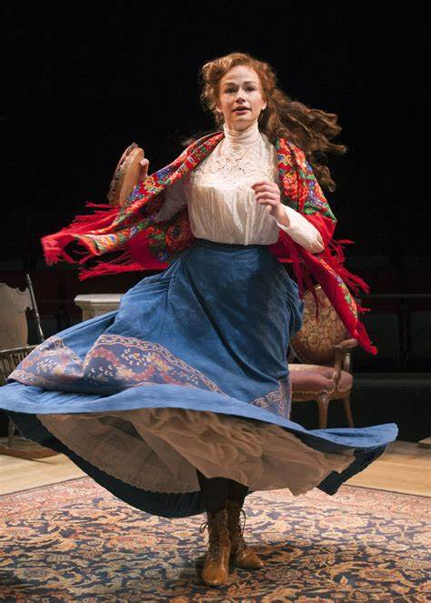
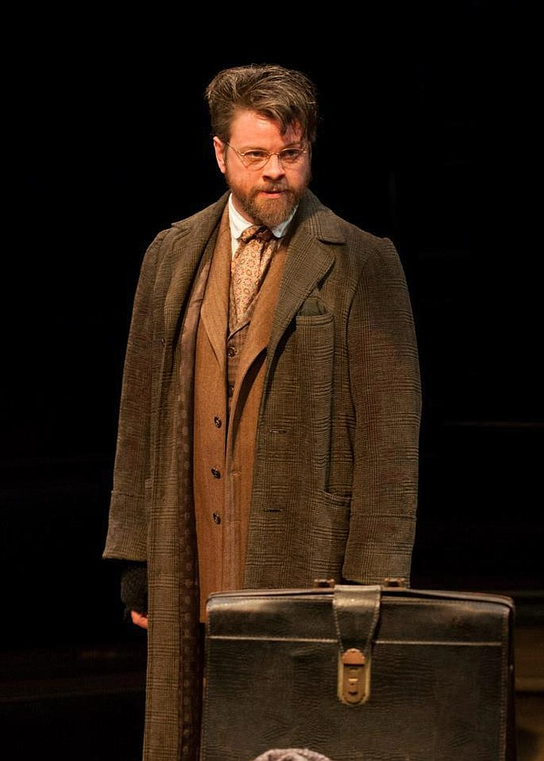
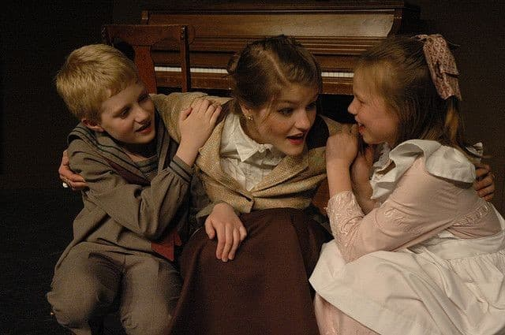
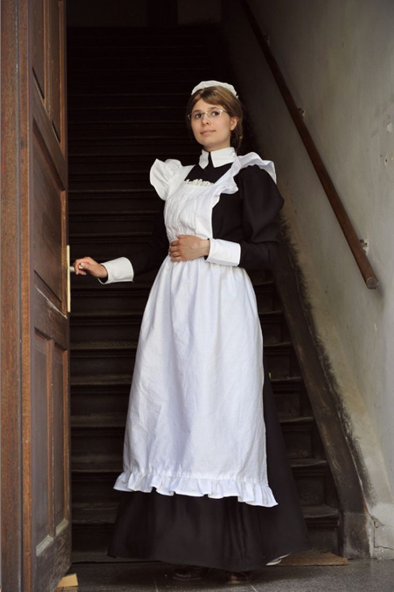
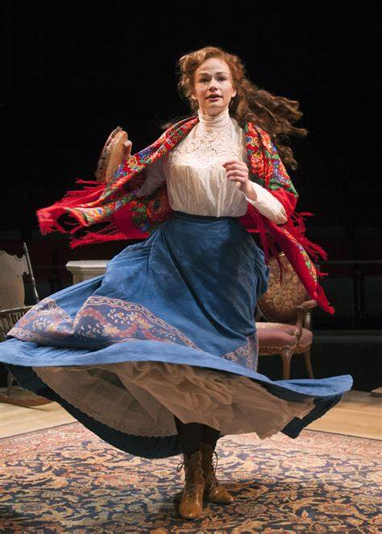
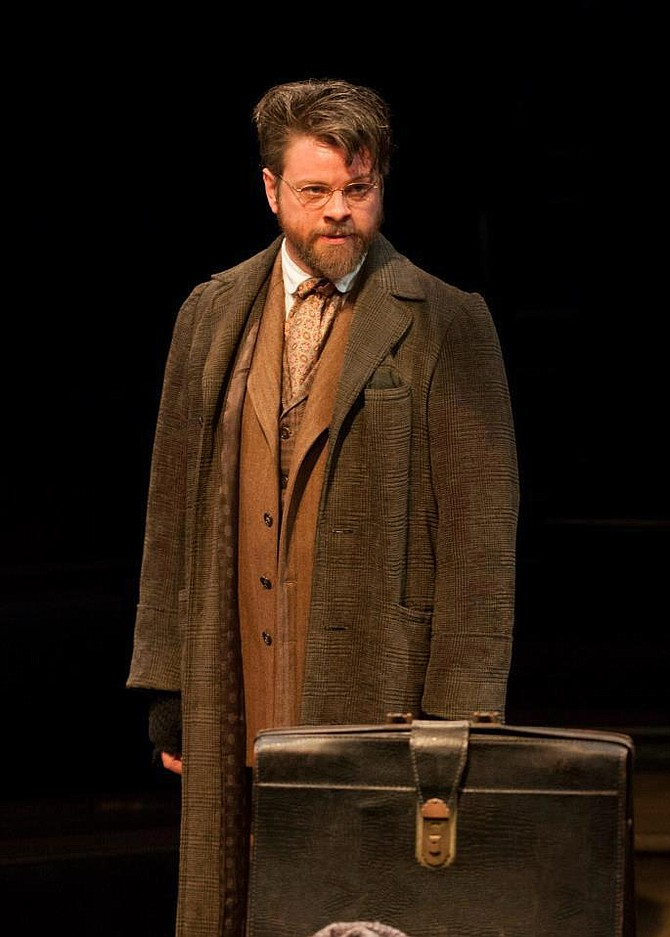
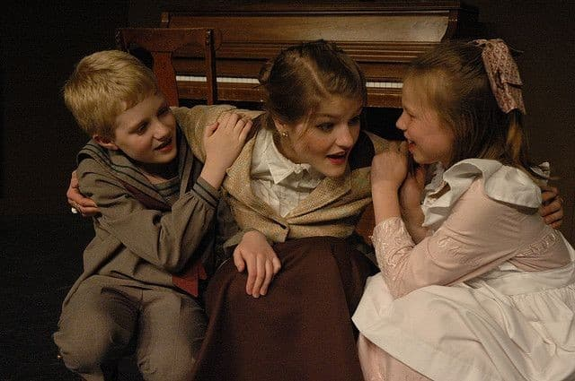
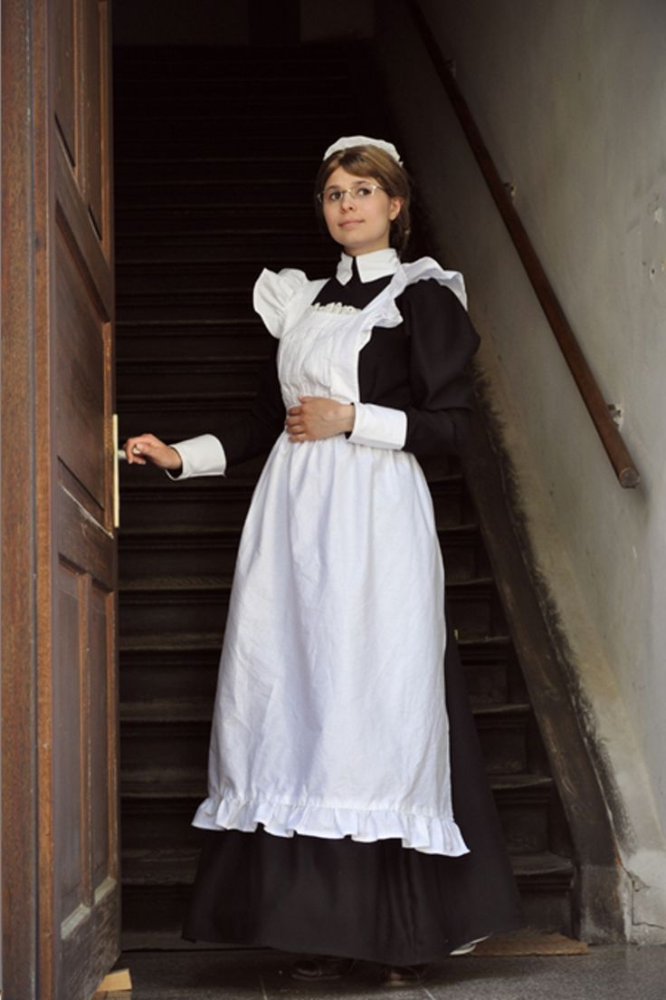

A Doll's House Character Analysis






| Name | Desire | Will | Moral Stance | Decorum | Adjectives |
|---|---|---|---|---|---|
| Nora  |
Wants to be a good wife and mother and to keep her secret about borrowing money from Torvald. | Strong: She does all that she can to stop Krogstad from telling Torvald. | She believes what she is doing is right but does not have a clear vision of her own morals because she has always followed what the men in her life tell her. | Is into more lavish and stylish living. Buys plainer fabrics because they are cheaper to help pay back loan. | Naïve, deceitful, determined, childish, clever |
| Torvald |
Wants to be good in his new position at the bank. | Strong: Is willing to fire a man he believes corrupt and will not listen to his wife to look good in his position | Has a clear view of his moral standings. Believes certain mistakes make you corrupt and not deserving of a second chance. He wants to keep a good image. | Dresses according to his position in society. Is a proper dresser but not an expensive dresser. | Shallow, smart, successful, unforgiving, hard worker |
| Krogstad  |
Wants to keep his good job and regain a good view in society | Strong: Is willing to do anything including blackmail Nora | Believes people deserve a second chance even if they have made mistakes in the past. Is willing to ruin others. | Makes sure he dresses appropriately, especially with trying to regain a good image | Lowly, sympathetic, determined, merciful, bitter, desperate |
| Mrs Linde |
Wants to find a stable job and a fresh start | Strong: Willing to travel for a job when she does not have much already | She believes that a wife and husband should not have secrets and its better to be honest with the people around you | Dresses simple. Is a widow and does not have much money | Wise, independent, helpful, strong |
| Dr Rank |
Wants to leave this world peacefully and love Nora | Weak: Has accepted death Medium: He is brave enough to tell Nora his feelings | He is not afraid to be indecent when it comes to telling Nora his feelings. I believe his morals are not strong based on his upbringing. | Dresses quite simple. Not into fashion and with being sick stays on the simpler side of life. | Weak, simple, indecent, audacious, caring |
| Children  |
To spend time with their mother and father | Neutral: Spends as much time as they can with their parents but doesn't annoy them | Are children so they don't really have a moral stance | Dresses apropiate for their age and proper to their class | young, loving, playful, obediant |
| Maid  |
Serves her mister and mistress well | Neutral: does her job well | She plays her role in society and doesn't cause a fuss | Dresses apropiate for her role in the house | proper, simple, obediant |